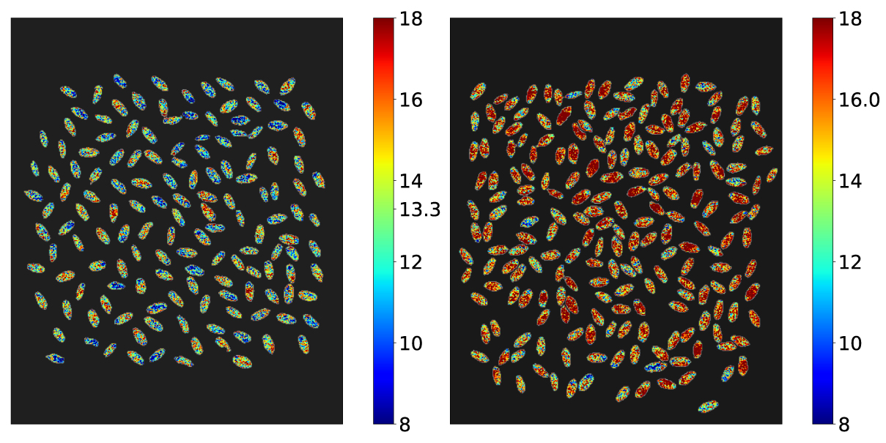
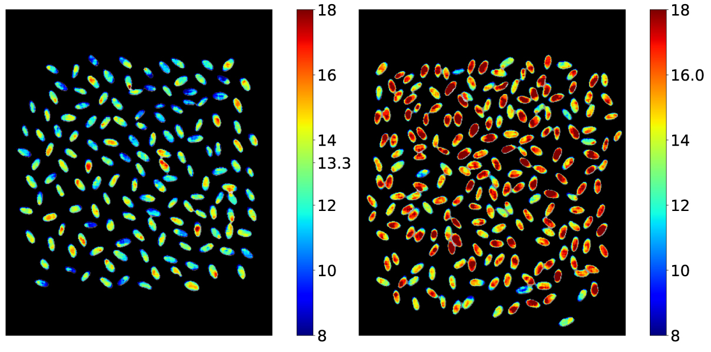
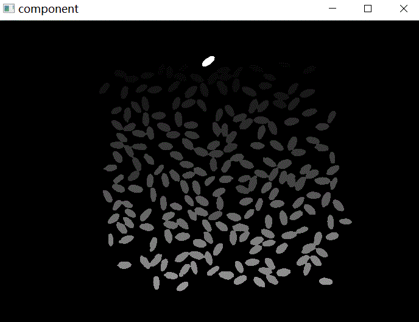
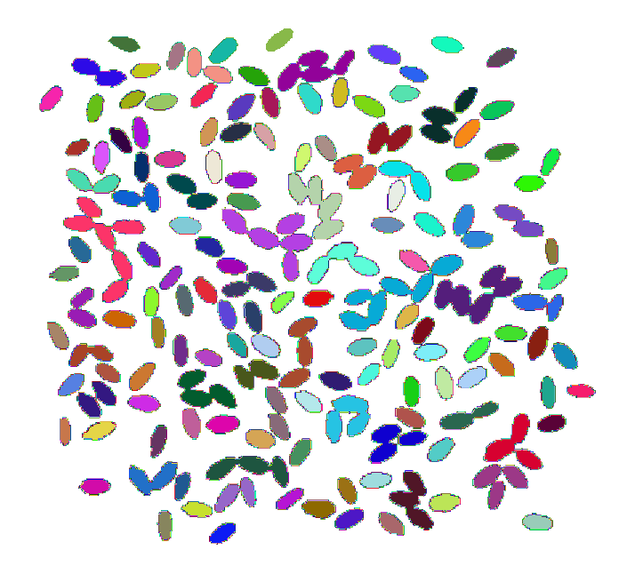
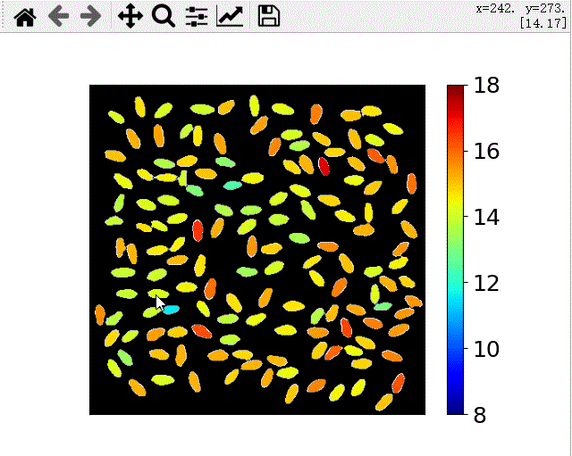
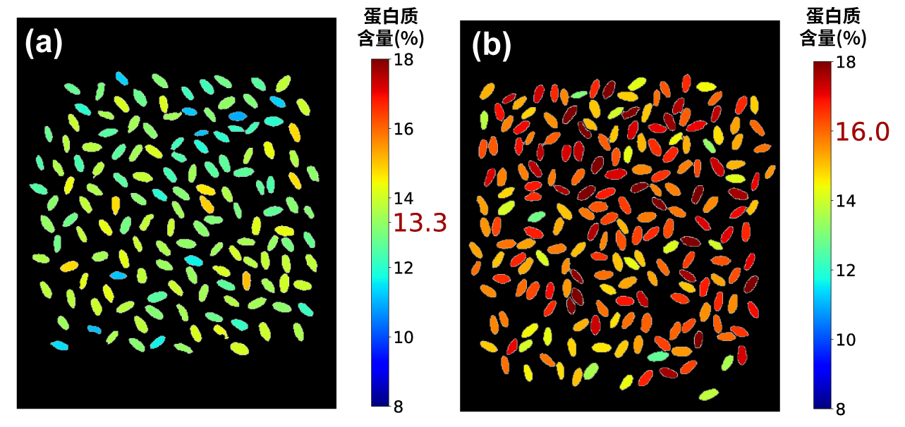

The key steps of protein content visualizaiton through HSI
运用成像光谱实现籽粒蛋白可视化

如上图所示，通过成像光谱，我们可以很轻松的对小麦籽粒中的蛋白含量进行可视化。
籽粒蛋白成像的基本步骤
这一过程的实现，包含两个关键步骤：一是建立单籽粒水平的光谱预测模型；二是将模型应用的图像中，使用图像处理的方法进行可视化。
光谱建模的步骤是常规操作，这里不再赘述。
光谱图像可视化籽粒蛋白含量
本文重点讲一下图像处理的过程。
我们都知道光谱图像（HSI）具有光谱和图像的双重特征。也就是说在光谱图像中，每一个像素都包含了一条光谱信息。而根据像素的光谱信息，再利用建立的籽粒蛋白预测模型，我们可以很容易的预测图像中每一个像素的蛋白含量。下图便是我们得到的一张像素水平的籽粒蛋白含量图。 
这个图展示了两个蛋白含量不同的品种。图中虽然能大体看出两个品种的差异，然而具体到每个品种中各不同籽粒的差异，就无法分辨了。
造成这样结果的原因是，图像中单个籽粒内部不同像素的光谱其实是存在较大差异的。而由于受到拍摄环境和像素位置等的影响，这些光谱的差异是不可避免的。当用这些有差异的光谱进行蛋白预测时，必然会导致籽粒内部像素级蛋白的巨大差异。为了处理这些差异，或者缩小这些差异，我们采用均值模糊的方法对图像进行处理。具体处理方法是，用临近的6个像素的平均值代表该像素，这样就能在一定程度上缩小误差。经过模糊均值处理的图像如下图所示。 
单籽粒籽粒蛋白含量可视化
在育种过程中，对单籽粒的选择尤为重要。虽然室内的近红外光谱可以一定程度上实现单籽粒蛋白的测定，但是其效率不高。而成像光谱为单籽粒蛋白含量的测定提供了很好的工具。
本研究得到的图像，经过图像分割处理，可以将图像中的籽粒区分开来。结合建立的模型，对每一个独立籽粒的蛋白含量就行预测，即可得到单籽粒蛋白含量图像。
从图像中可以看出，大部分籽粒都与其他籽粒相互分开分开。籽粒之间的分割，首先采用了连通区域分析算法，这个算法将相互连接的像素区域打上相同的标记。根据标记可以区分出不同的分离物体（籽粒）。
 这个动图形象的展示了该图形分割方法。

然而我们发现，其中还有一些籽粒挨的比较近，无法分开。于是尝试用另外一种方法——分水岭算法进行分割。最终得到满意的分割图像，然后将每个籽粒内部对应的蛋白质（像素水平）预测含量取平均值，用颜色标签展示数值范围。就能得到最终想要的图像了。该图形可以交互展示，即鼠标放到对应的籽粒上，会在右上角显示该位置坐标和对应的籽粒蛋白含量。  下面图片展示了两个品种的单籽粒成像图。 由于通过图像分割对每个籽粒进行了标记，因此可以得到每一个籽粒的蛋白含量数据。利用这些数据可以做一些统计分析。 

Wei Li (李伟)
PostDoc of Crop Science
My research interests include high throughput crop phenotyping and genetics of quantitative traits in maize.